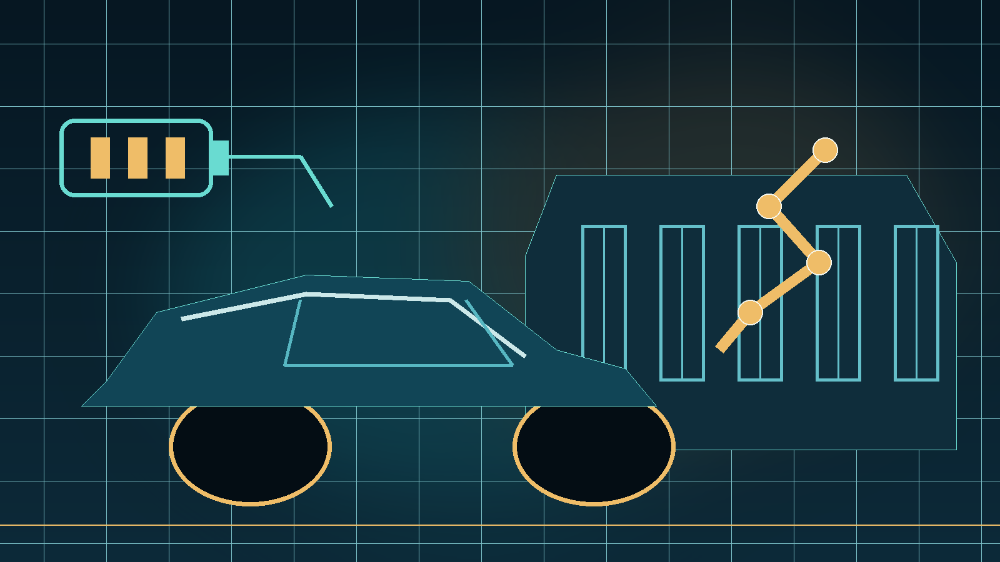
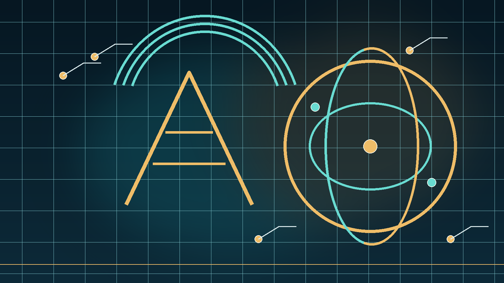
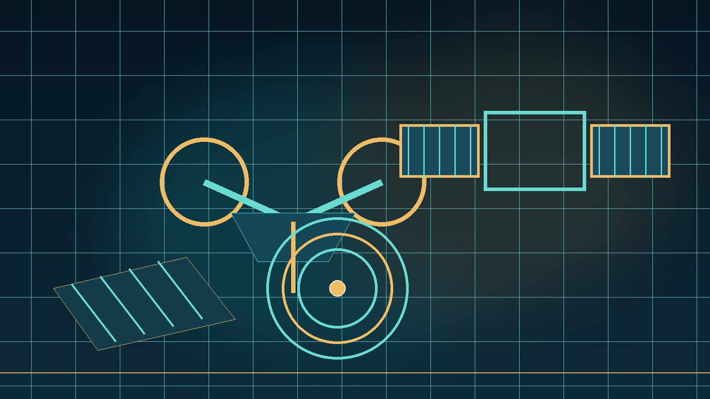

Module 1 · 8 slidesThe Smart Vehicle and the Factory of the FuturePowerPoint with speaker notesPDFInteractive laboratory
Module 2 · 7 slides6G and Quantum ComputingPowerPoint with speaker notesPDFInteractive laboratory
Module 3 · 10 slidesNeurotechnology, Biotechnology and AI for SciencePowerPoint with speaker notesPDFInteractive laboratory
Module 4 · 12 slidesDrones, Space and Energy: China 2030PowerPoint with speaker notesPDFInteractive laboratory